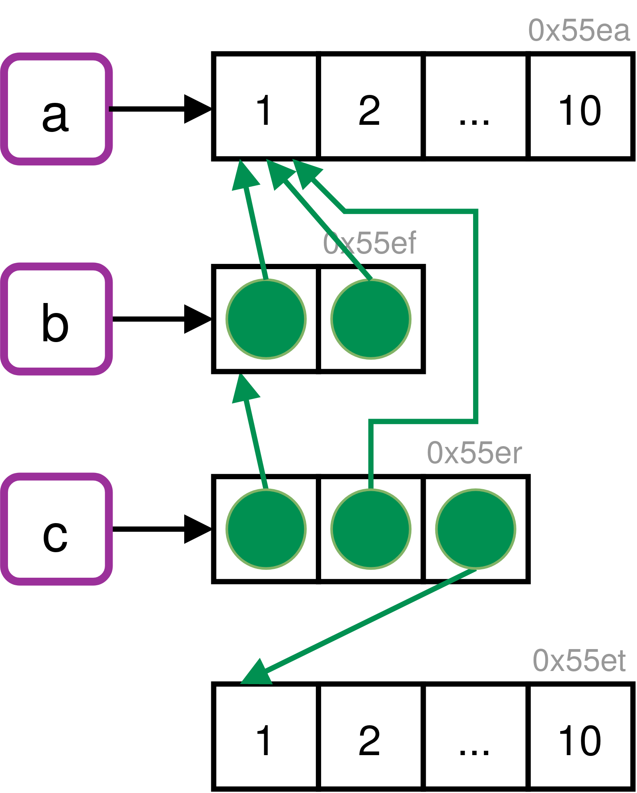
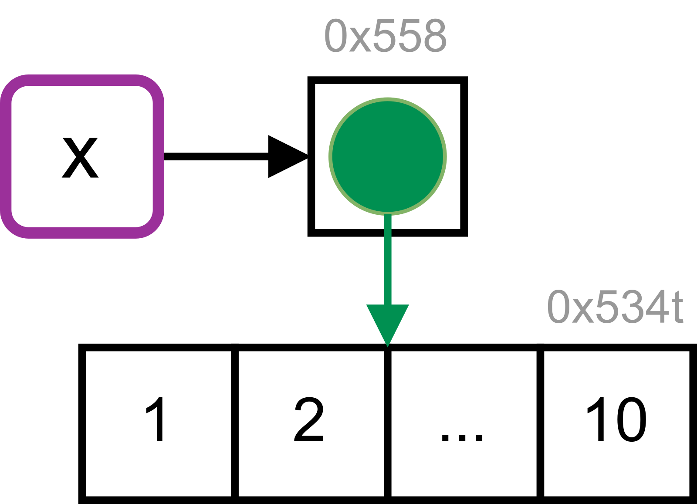
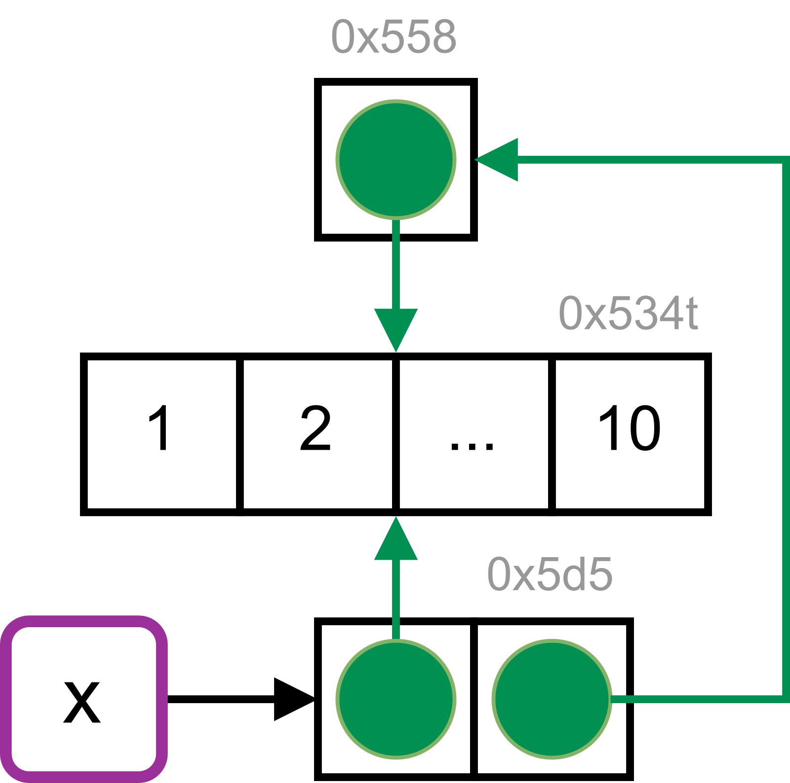

library(lobstr)2 - Names and values
Prerequisites
In this chapter we will use the {lobstr} package (Wickham 2019) to help answer questions regarding the internal representation of R objects.
Binding basics
Q1: Explain the relationship between a, b, c, and d in the following code:
a <- 1:10
b <- a
c <- b
d <- 1:10A: a, b, and c point to the same object (with the same address in memory). This object has the value 1:10. d points to a different object with the same value.
list_of_names <- list(a, b, c, d)
obj_addrs(list_of_names)
#> [1] "0x579852a52008" "0x579852a52008" "0x579852a52008" "0x579852b9b088"Q2: The following code accesses the mean function in multiple ways. Do they all point to the same underlying function object? Verify this with lobstr::obj_addr().
mean
base::mean
get("mean")
evalq(mean)
match.fun("mean")A: Yes, they point to the same object. We confirm this by inspecting the address of the underlying function object.
mean_functions <- list(
mean,
base::mean,
get("mean"),
evalq(mean),
match.fun("mean")
)
unique(obj_addrs(mean_functions))
#> [1] "0x5798501620b8"Q3: By default, base R data import functions, like read.csv(), will automatically convert non-syntactic names to syntactic ones. Why might this be problematic? What option allows you to suppress this behaviour?
A: Column names are often data, and the underlying make.names() transformation is non-invertible, so the default behaviour corrupts data. To avoid this, set check.names = FALSE.
Q4: What rules does make.names() use to convert non-syntactic names into syntactic ones?
A: A valid name must start with a letter or a dot (not followed by a number) and may further contain numbers and underscores ("_"s are allowed since R version 1.9.0).
Three main mechanisms ensure syntactically valid names (see ?make.names):
Names that do not start with a letter or a dot will be prepended with an
"X".::: {.cell layout-align=“center” hash=‘02_Names_and_values_cache/html/unnamed-chunk-7_f6ccd6953d5a91424d54eb5b450943a0’}
make.names("") # prepending "x" #> [1] "X":::
The same holds for names that begin with a dot followed by a number.
::: {.cell layout-align=“center” hash=‘02_Names_and_values_cache/html/unnamed-chunk-8_3c866f40ef56f4f8e63bf8e89559c7e8’}
make.names(".1") # prepending "X" #> [1] "X.1":::
Additionally, non-valid characters are replaced by a dot.
::: {.cell layout-align=“center” hash=‘02_Names_and_values_cache/html/unnamed-chunk-9_860c452c7c7ee11fe572d39a98a28b68’}
make.names("non-valid") # "." replacement #> [1] "non.valid" make.names("@") # prepending "X" + "." replacement #> [1] "X." make.names(" R") # prepending "X" + ".." replacement #> [1] "X..R":::
Reserved R keywords (see
?reserved) are suffixed by a dot.::: {.cell layout-align=“center” hash=‘02_Names_and_values_cache/html/unnamed-chunk-10_424c337c3ffcfb23561e4b66ebfe240a’}
make.names("if") # "." suffix #> [1] "if.":::
Interestingly, some of these transformations are influenced by the current locale. From ?make.names:
The definition of a letter depends on the current locale, but only ASCII digits are considered to be digits.
Q5: I slightly simplified the rules that govern syntactic names. Why is .123e1 not a syntactic name? Read ?make.names for the full details.
A: .123e1 is not a syntactic name, because it starts with one dot which is followed by a number. This makes it a double, 1.23.
Copy-on-modify
Q1: Why is tracemem(1:10) not useful?
A: When 1:10 is called an object with an address in memory is created, but it is not bound to a name. Therefore, the object cannot be called or manipulated from R. As no copies will be made, it is not useful to track the object for copying.
obj_addr(1:10) # the object exists, but has no name
#> [1] "0x5798525d5010"Q2: Explain why tracemem() shows two copies when you run this code. Hint: carefully look at the difference between this code and the code shown earlier in the section.
x <- c(1L, 2L, 3L)
tracemem(x)
x[[3]] <- 4A: Initially the vector x has integer type. The replacement call assigns a double to the third element of x, which triggers copy-on-modify.
x <- c(1L, 2L, 3L)
tracemem(x)
#> <0x66a4a70>
x[[3]] <- 4
#> tracemem[0x55eec7b3af38 -> 0x55eec774cc18]:We can avoid the copy by sub-assigning an integer instead of a double:
x <- c(1L, 2L, 3L)
tracemem(x)
#> <0x55eec6940ae0>
x[[3]] <- 4LPlease be aware that running this code in RStudio will result in additional copies because of the reference from the environment pane.
Q3: Sketch out the relationship between the following objects:
a <- 1:10
b <- list(a, a)
c <- list(b, a, 1:10)A: a contains a reference to an address with the value 1:10. b contains a list of two references to the same address as a. c contains a list of b (containing two references to a), a (containing the same reference again) and a reference pointing to a different address containing the same value (1:10).

We can confirm these relationships by inspecting the reference tree in R.
ref(c)
#> █ [1:0x55erc93cbdd8] <list> # c
#> ├─█ [2:0x55efcb8246e8] <list> # - b
#> │ ├─[3:0x55eac7df4e98] <int> # -- a
#> │ └─[3:0x55eac7df4e98] # -- a
#> ├─[3:0x55eac7df4e98] # - a
#> └─[4:0x55etc7aa6968] <int> # - 1:10Q4: What happens when you run this code:
x <- list(1:10)
x[[2]] <- xDraw a picture.
A: The initial reference tree of x shows that the name x binds to a list object. This object contains a reference to the integer vector 1:10.
x <- list(1:10)
ref(x)
#> █ [1:0x55853b74ff40] <list>
#> └─[2:0x534t3abffad8] <int>
When x is assigned to an element of itself, copy-on-modify takes place and the list is copied to a new address in memory.
tracemem(x)
x[[2]] <- x
#> tracemem[0x55853b74ff40 -> 0x5d553bacdcd8]:The list object previously bound to x is now referenced in the newly created list object. It is no longer bound to a name. The integer vector is referenced twice.
ref(x)
#> █ [1:0x5d553bacdcd8] <list>
#> ├─[2:0x534t3abffad8] <int>
#> └─█ [3:0x55853b74ff40] <list>
#> └─[2:0x534t3abffad8]
Object size
Q1: In the following example, why are object.size(y) and obj_size(y) so radically different? Consult the documentation of object.size().
y <- rep(list(runif(1e4)), 100)
object.size(y)
#> 8005648 bytes
obj_size(y)
#> 80.90 kBA: object.size() doesn’t account for shared elements within lists. Therefore, the results differ by a factor of ~ 100.
Q2: Take the following list. Why is its size somewhat misleading?
funs <- list(mean, sd, var)
obj_size(funs)
#> 17.55 kBA: All three functions are built-in to R as part of the {base} and {stats} packages and hence always available. So, what does it mean to measure the size of something that’s already included in R?
(There’s typically a more general question about what you want to know when you ask for the size of something — do you want to know how much data you’d need to send to communicate the object to someone else (e.g. serialise it), or do you want to know how much memory you’d free if you deleted it?)
Let us look for how many other objects this applies to as well.
The following packages are usually loaded by default.
base_pkgs <- c(
"package:stats", "package:graphics", "package:grDevices",
"package:utils", "package:datasets", "package:methods",
"package:base"
)To look up all functions from these packages we iterate over base_pkgs and apply ls() and mget() within each iteration.
base_objs <- base_pkgs %>%
lapply(as.environment) %>%
lapply(function(x) mget(ls(x, all.names = TRUE), x)) %>%
setNames(base_pkgs)This gives us more than 2700 objects which are usually available by default.
sum(lengths(base_objs))
#> [1] 2776
# We can also show the sizes in MB per package
vapply(base_objs, obj_size, double(1)) / 1024^2
#> package:stats package:graphics package:grDevices package:utils
#> 11.150 3.114 2.315 7.283
#> package:datasets package:methods package:base
#> 0.558 13.962 21.310
# Check if we've over-counted
as.numeric(obj_size(!!!base_objs)) / 1024^2
#> [1] 57.9Q3: Predict the output of the following code:
a <- runif(1e6)
obj_size(a)
b <- list(a, a)
obj_size(b)
obj_size(a, b)
b[[1]][[1]] <- 10
obj_size(b)
obj_size(a, b)
b[[2]][[1]] <- 10
obj_size(b)
obj_size(a, b)A: In R (on most platforms) a length-0 vector has 48 bytes of overhead.
obj_size(list())
#> 48 B
obj_size(double())
#> 48 B
obj_size(character())
#> 48 BA single double takes up an additional 8 bytes of memory.
obj_size(double(1))
#> 56 B
obj_size(double(2))
#> 64 BSo, a 1 million double should take up 8,000,048 bytes.
a <- runif(1e6)
obj_size(a)
#> 8.00 MB(If you look carefully at the amount of memory occupied by short vectors, you will notice that the pattern is actually more complicated. This has to do with how R allocates memory and is not that important. If you want to know the full details, they’re discussed in the 1st edition of Advanced R: http://adv-r.had.co.nz/memory.html#object-size).
For b <- list(a, a) both list elements contain references to the same memory address.
b <- list(a, a)
ref(a, b)
#> [1:0x579859a76fc0] <dbl>
#>
#> █ [2:0x579852b66208] <list>
#> ├─[1:0x579859a76fc0]
#> └─[1:0x579859a76fc0]Therefore, no additional memory is required for the second list element. The list itself requires 64 bytes, 48 bytes for an empty list and 8 bytes for each element (obj_size(vector("list", 2))). This lets us predict 8,000,048 B + 64 B = 8,000,112 B.
obj_size(b)
#> 8.00 MBWhen we modify the first element of b[[1]] copy-on-modify occurs. Both elements will still have the same size (8,000,040 B), but the first one gets a new address in memory. As b’s elements don’t share references anymore, its object size adds up to the sum of the elements and the length-2 list: 8,000,048 B + 8,000,048 B + 64 B = 16,000,160 B (16 MB).
b[[1]][[1]] <- 10
obj_size(b)
#> 16.00 MBThe second element of b still references the same address as a, so the combined size of a and b is the same as b.
obj_size(a, b)
#> 16.00 MB
ref(a, b)
#> [1:0x579859a76fc0] <dbl>
#>
#> █ [2:0x5798587d8828] <list>
#> ├─[3:0x57985cdf4fa0] <dbl>
#> └─[1:0x579859a76fc0]When we modify the second element of b, this element will also point to a new memory address. This does not affect the size of the list.
b[[2]][[1]] <- 10
obj_size(b)
#> 16.00 MBHowever, as b doesn’t share references with a anymore, the memory usage of the combined objects increases.
ref(a, b)
#> [1:0x579859a76fc0] <dbl>
#>
#> █ [2:0x579858188b58] <list>
#> ├─[3:0x57985cdf4fa0] <dbl>
#> └─[4:0x57985af6c830] <dbl>
obj_size(a, b)
#> 24.00 MBModify-in-place
Q1: Explain why the following code doesn’t create a circular list.
x <- list()
x[[1]] <- xA: In this situation copy-on-modify prevents the creation of a circular list. Let us step through the details:
x <- list() # creates initial object
obj_addr(x)
#> [1] "0x55862f23ab80"
tracemem(x)
#> [1] "<0x55862f23ab80>"
x[[1]] <- x # Copy-on-modify triggers new copy
#> tracemem[0x55862f23ab80 -> 0x55862e8ce028]:
obj_addr(x) # copied object has new memory address
#> [1] "0x55862e8ce028"
obj_addr(x[[1]]) # list element contains old memory address
#> [1] "0x55862f23ab80"Q2: Wrap the two methods for subtracting medians into two functions, then use the {bench} package to carefully compare their speeds. How does performance change as the number of columns increase?
A: First, we define a function to create some random data.
create_random_df <- function(nrow, ncol) {
random_matrix <- matrix(runif(nrow * ncol), nrow = nrow)
as.data.frame(random_matrix)
}
create_random_df(2, 2)
#> V1 V2
#> 1 0.972 0.0116
#> 2 0.849 0.4339Next, we wrap the two approaches to subtract numerical values (in our case medians) from each column of a data frame in their own function. We name these functions depending on whether the approach operates on a data frame or a list. For a fairer comparison, the second function also contains the overhead code to convert between data frame and list objects.
subtract_df <- function(x, medians) {
for (i in seq_along(medians)) {
x[[i]] <- x[[i]] - medians[[i]]
}
x
}
subtract_list <- function(x, medians) {
x <- as.list(x)
x <- subtract_df(x, medians)
list2DF(x)
}This lets us profile the performance, via benchmarks on data frames with differing numbers of columns. Therefore, we create a small helper that creates our random data frame and its medians before it benchmarks the two approaches by employing the {bench} package (Hester 2020).
benchmark_medians <- function(ncol) {
df <- create_random_df(nrow = 1e4, ncol = ncol)
medians <- vapply(df, median, numeric(1), USE.NAMES = FALSE)
bench::mark(
"data frame" = subtract_df(df, medians),
"list" = subtract_list(df, medians),
time_unit = "ms"
)
}
benchmark_medians(1)
#> # A tibble: 2 × 6
#> expression min median `itr/sec` mem_alloc `gc/sec`
#> <bch:expr> <dbl> <dbl> <dbl> <bch:byt> <dbl>
#> 1 data frame 0.0130 0.0149 60947. 99.1KB 61.0
#> 2 list 0.0124 0.0141 65028. 78.2KB 65.1The bench::press() function allows us to run our helper across a grid of parameters. We will use it to slowly increase the number of data frame columns in our benchmark.
results <- bench::press(
ncol = c(1, 10, 50, 100, 250, 300, 400, 500, 750, 1000),
benchmark_medians(ncol)
)
#> Running with:
#> ncol
#> 1 1
#> 2 10
#> 3 50
#> 4 100
#> 5 250
#> 6 300
#> 7 400
#> 8 500
#> 9 750
#> 10 1000Finally, we can plot and interpret our results.
library(ggplot2)
ggplot(
results,
aes(ncol, median, col = attr(expression, "description"))
) +
geom_point(size = 2) +
geom_smooth() +
labs(
x = "Number of Columns",
y = "Execution Time (ms)",
colour = "Data Structure"
) +
theme(legend.position = "top")
#> `geom_smooth()` using method = 'loess' and formula = 'y ~ x'
When working directly with the data frame, the execution time grows quadratically with the number of columns in the input data. This is because (e.g.) the first column must be copied n times, the second column n-1 times, and so on. When working with a list, the execution time increases only linearly.
Obviously in the long run, linear growth creates shorter run-times, but there is some cost to this strategy — we have to convert between data structures with as.list() and list2DF(). Even though this is fast and probably doesn’t hurt much, the improved approach doesn’t really pay off in this scenario until we get to a data frame that is about 300 columns wide (with the exact value depending on the characteristics of the system running the code).
Q3: What happens if you attempt to use tracemem() on an environment?
A: tracemem() cannot be used to mark and trace environments.
x <- new.env()
tracemem(x)
#> Error in tracemem(x): 'tracemem' is not useful for promise and environment objectsThe error occurs because “it is not useful to trace NULL, environments, promises, weak references, or external pointer objects, as these are not duplicated” (see ?tracemem). Environments are always modified in place.
References
Hester, Jim. 2020. Bench: High Precision Timing of r Expressions. https://github.com/r-lib/bench.
Wickham, Hadley. 2019. Lobstr: Visualize r Data Structures with Trees. https://github.com/r-lib/lobstr.